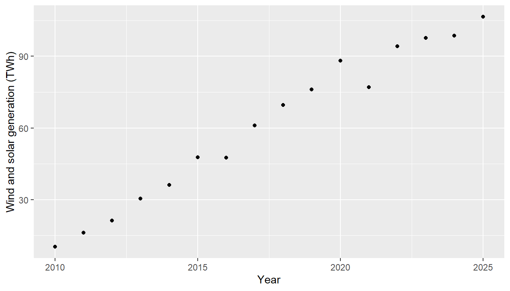
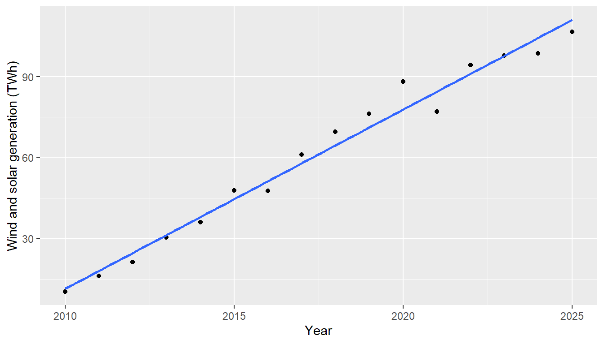
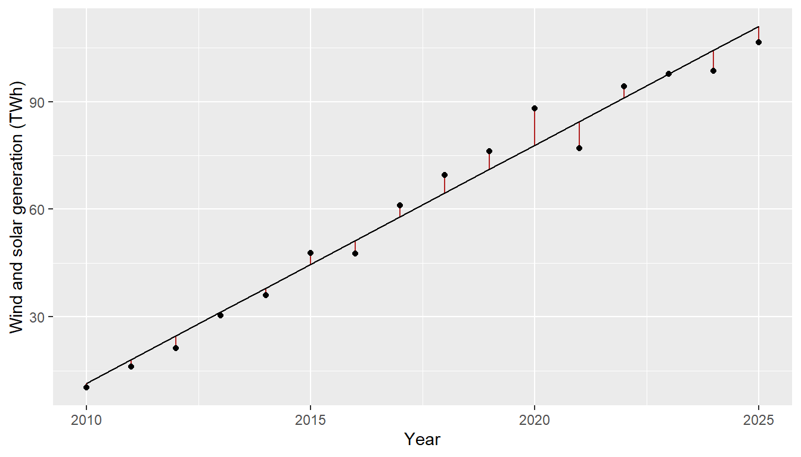
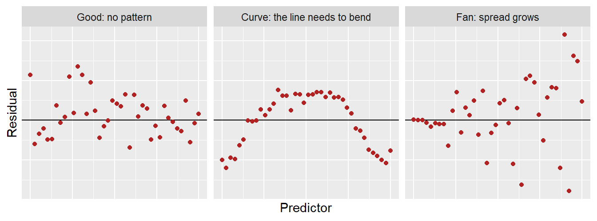
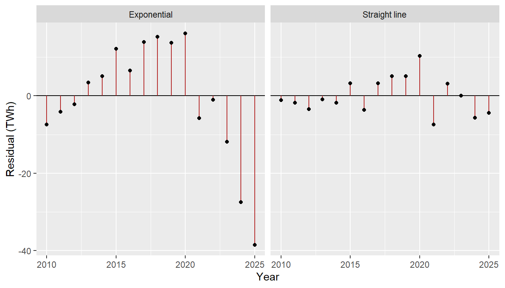
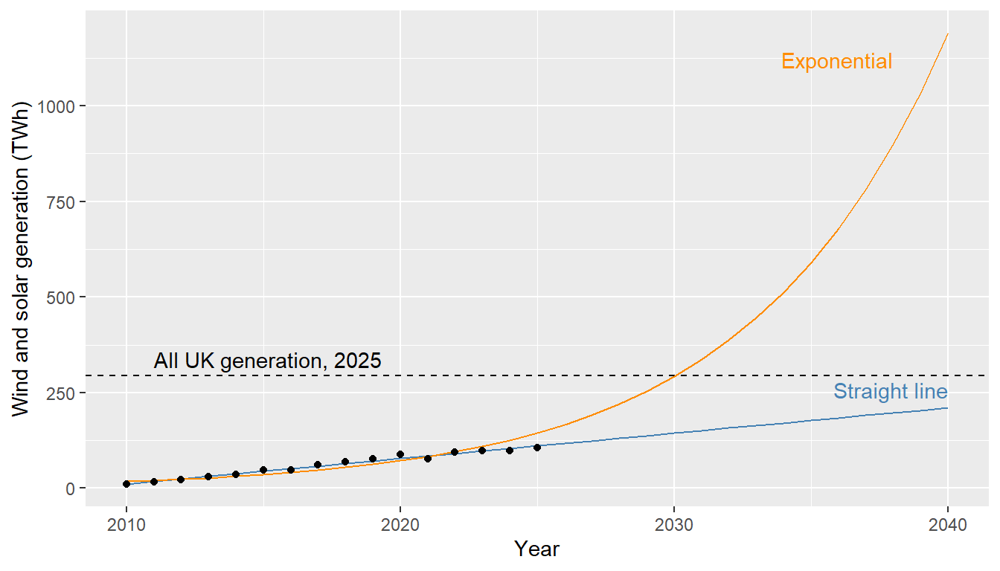

On Tuesday you met lm() and a few things that might go wrong with it. (You might want to re-visit its exercise page after today, and see what makes sense once you have some experience of running your own models.)
Today is your chance to get familiar with linear models by analysing your own project’s data. (As with last week, this might not be the best tool for the question you end up asking: but hopefully you can coerce some form of model onto your data. If you’re stuck, talk to us.)
In this exercise, I’ll walk you through an example using data on UK wind and solar generation.
The goal is for you to follow along by building equivalent code that works on your own data.
By the end of the session you should have a handle on the workflow involved in fitting and interrogating a linear model.
Because you’ll work with your own data (which aren’t in the browser), you’ll need to run today’s code on your own computer. Open your group repo in GitHub desktop and start a new branch, perhaps martin-linear-models. Launch Positron and create a new script (I’ll call mine model-renewables.R). Add each step to it as you go. Answers questions by writing comments in the script.
Goals:
Know what each step of fitting a linear model is for
Read a model’s summary against its plot
Use residuals to judge whether a model fits
Make a prediction, and determine how far to trust it
1. Look at your data
Before modelling anything: What does your data look like?
My data contains one row per year, 2000–2025, listing generation by fuel in TWh. I’m going to analyse wind and solar together (= ‘renewables’); and I’m going to start in 2010, when they started to matter:
Read your file into R and run str() on it. In a comment, list the columns you’ll use, with their units, and how many rows you have.
2. Decide what you expect
A model has a response (the thing you want to explain or predict, on the y axis) and a predictor (what you think drives it, on the x axis). Decide which is which, and what you expect to see, before you look.
I’m going to look at how renewable generation has changed over time. My response is “renewable generation” and my predictor is “year”.
I expect generation to rise: the UK has been adding new wind and solar installations faster than old ones have been decommissioned.
Your data
Write one comment: “I expect response to go up / down as predictor goes up, because …”.
3. Plot the predictor against the response
Let’s run a quick sanity check: does my prediction survive first contact with the data?
ggplot(recent, aes(x = year, y = renewable_twh)) +geom_point() +labs(x ="Year", y ="Wind and solar generation (TWh)")

Looks good to me: renewables generation rises with time, and the relationship looks close to a straight line.
How about you: does your data do what you expected? If not, that’s useful to know: maybe it’s time to rethink your hypothesis?
Your data
Plot your predictor (x) against your response (y). Does it match your prediction? Does the relationship look anything like a straight line?
4. Fit a linear model
A linear model may be expressed mathematically as
y = β₀ + β₁x + ε:
β₀ is the height of the line where it crosses \(x = 0\); β₁ denotes the slope (how much y changes when x increases by one); and ε denotes “what’s left”: how far each observation sits from the line. lm() estimates β₀ and β₁.
lin_model <-lm(renewable_twh ~ year, data = recent)
Read the formula as “thing on the left is predicted by (~) thing(s) on the right”.
Your data
Create your own
model <-lm(response ~ predictor, data = your_data)
using the appropriate columns from your own dataset.
5. Let’s see the model
Great, now I have a model. What does it predict? geom_smooth(method = "lm") fits the same model as lm(), and adds it to a plot.
ggplot(recent, aes(x = year, y = renewable_twh)) +geom_point() +geom_smooth(method ="lm", se =FALSE) +labs(x ="Year", y ="Wind and solar generation (TWh)")

How to read this? Pick a year (x coordinate), and trace it up until you hit the blue line. The blue line is the predicted renewable generation (y coordinate – the value of the response variable) at that value of x.
How well does the model predict (fit) the data? Well, for my 2015 year, the observed value’s pretty close to the prediction – 2023 is pretty much bang on! Sometimes the prediction’s not so great (2020; 2021): the distance that an observation falls above or below the line is its residual, a gap between the model’s prediction and reality.
Your data
Plot your own linear model alongside your data. Does the line fall where you’d have drawn it by eye? How close do your data sit to the model’s prediction?
6. Read the model
OK, my model doesn’t look bad. But how good is it really? Let’s put some numbers on this. summary(model) gives a bunch of useful information:
summary(lin_model)
Call:
lm(formula = renewable_twh ~ year, data = recent)
Residuals:
Min 1Q Median 3Q Max
-7.386 -3.504 -1.001 3.233 10.349
Coefficients:
Estimate Std. Error t value Pr(>|t|)
(Intercept) -1.333e+04 5.317e+02 -25.06 4.96e-13 ***
year 6.635e+00 2.636e-01 25.18 4.66e-13 ***
---
Signif. codes: 0 '***' 0.001 '**' 0.01 '*' 0.05 '.' 0.1 ' ' 1
Residual standard error: 4.86 on 14 degrees of freedom
Multiple R-squared: 0.9784, Adjusted R-squared: 0.9768
F-statistic: 633.8 on 1 and 14 DF, p-value: 4.657e-13
Let’s figure out what each of these numbers is telling us about the plot.
Slope (year, 6.635): move one year to the right and the line climbs 6.635 TWh. Put another way: each year since 2010, the UK has added about 6.635 TWh of wind and solar generation.
Intercept (-1.333e+04: about −13 300): If I followed the line all the way back to \(x\) (year) \(= 0\), where would the line cross the axis? In this context, this isn’t an interesting question, so I’m going to ignore this value.
R² (Multiple R-squared, 0.9784): the share of the variation in the response that the line accounts for. The model can predict the amount of generation almost perfectly just by knowing the year: the 2 % left over is the scatter of points about the line. R² near 1: points close to the line. Near 0: points scattered widely around it.
Residual standard error (4.86 TWh): how far a point typically sits from the line.
p-value (Pr(>|t|) on the year row, 4.66e-13): If there wasn’t actually any relationship between year and output, what’s the probability I’d see a line at least this steep (up or down) just by chance? e-13 means “times ten to the minus thirteen”: astronomically small.
Your data
Run summary() on your own model, then add a few lines of comments to your file describing:
what your slope means, in your units (“each extra … adds …”);
whether that is a big number, compared with something you know;
what your R² means, in your own words.
7. Examine the residuals
The residuals are the vertical distances from the line to each point: observed minus predicted. They are the ε in the model, the part the line doesn’t explain.
recent$fitted <-fitted(lin_model)recent$residual <-resid(lin_model)ggplot(recent, aes(x = year, y = renewable_twh)) +geom_segment(aes(xend = year, yend = fitted), colour ="firebrick") +geom_line(aes(y = fitted)) +geom_point() +labs(x ="Year", y ="Wind and solar generation (TWh)")

Now let’s “rotate the line until it’s flat”, and look just at the red segments: how do those residuals vary with the predictor?
(In practice, I use the simpler plot(model, which = 1), which plots residuals against fitted values. Do you find the output of the ggplot code more intuitive?)
If the model has captured the pattern, what’s left over should be noise: a patternless scatter around zero. Look out for shapes like these:

My residuals aren’t enormous, and no pattern jumps out: but if I look closely I can detect a faint arch: early and late years have less output than the model predicts, and middle years more. Could a surge of growth now be tailing off?
A couple of individual years also jump out. 2021 is a long way below the line, which raises the question: what weird thing happened in 2021? It turns out this mainly reflects an unusually calm year, where the wind barely blew.
Is there a pattern to your own residuals? Are there any outliers, and what story might they tell?
Your data
Make both plots for your model: the line with its residuals, then the residuals alone. Which of the three shapes do yours look like? Do any single points stand out, and do you know why?
8. Try another model
I wasn’t convinced that my residuals were scattered randomly about the line. That makes me suspect that my linear model gets the structure of the relationship wrong.
Nowadays it’s fashionable to talk about new technologies growing “exponentially”: so perhaps we should model exponential, rather than linear, growth? Something grows exponentially when it increases by the same percentage each year, like compound interest.
This doesn’t sound like a linear model: but if we take the log of the response variable, then exponential growth looks like a straight line!
Does this make sense? If you’re a bit rusty on logarithms, imagine that generation increases by a factor of ten every year: so year 1, 1 TWh, year 2, 10 TWh, year 3, 100 TWh, … Plot this trend out on linear axes, then with a logarithmic y axis. Do you understand why a straight line appears?
exp_model <-lm(log(renewable_twh) ~ year, data = recent)coef(exp_model)
(Intercept) year
-279.1367085 0.1403032
The slope, 0.14, now gives growth rate: about 15 % a year.
Which model fits better? Let’s take a peek at the residuals. My exponential model predicts log(TWh), but I’m interested in TWh. How do we get from log(TWh) back to TWh? exp() is the tool we need here:
resids <-rbind(data.frame(year = recent$year, model ="Straight line",residual =resid(lin_model)),data.frame(year = recent$year, model ="Exponential",residual = recent$renewable_twh -exp(fitted(exp_model))))ggplot(resids, aes(x = year, y = residual)) +geom_hline(yintercept =0) +geom_segment(aes(xend = year, yend =0), colour ="firebrick") +geom_point() +facet_wrap(~ model) +labs(x ="Year", y ="Residual (TWh)")

Oh dear. That didn’t help at all! Under the exponential model, my residuals display a much more prominent arch!
What did I do wrong? Well, an exponential curve bends up, but our data was bending down: it was levelling off, not levelling up! Of the two models, I think I’ll stick with the straight line.
But perhaps an exponential helps with your data? Or perhaps the pattern of your residuals suggests that some other structure might underpin your observations?
Whilst we’re here, a small warning: summary(exp_model) gives R² = 0.88. Don’t compare that to the straight line’s 0.98: it measures how well the model predicts log(TWh), not TWh. AIC can’t compare models that predict different things, either.
Your data
What do your residuals look like?
No pattern? Your straight line is doing its job. Say so in a comment, and move on.
A curve or a fan? Try lm(log(response) ~ predictor, ...) (only if every response is above zero). Compare both models’ residuals, in your original units. Which fits better?
9. Make a prediction
Always a bit risky, this: but I’d like to use my model to predict renewable generation in 2040 (fifteen years after the data end).
Rather different numbers! I’m going to plot things out so I can understand where the difference comes from.
future <-data.frame(year =2010:2040)future$linear <-predict(lin_model, newdata = future)future$exponential <-exp(predict(exp_model, newdata = future))ggplot(recent, aes(x = year, y = renewable_twh)) +geom_hline(yintercept = total_2025, linetype ="dashed") +annotate("text", x =2011, y = total_2025, vjust =-0.5, hjust =0,label ="All UK generation, 2025") +geom_line(data = future, aes(y = linear), colour ="steelblue") +geom_line(data = future, aes(y = exponential), colour ="darkorange") +annotate("text", x =c(2040, 2038), y =c(210, 1100), hjust =1,vjust =c(-0.6, 0), label =c("Straight line", "Exponential"),colour =c("steelblue", "darkorange")) +geom_point() +labs(x ="Year", y ="Wind and solar generation (TWh)")

There we go: neither model looked too bad over the period 2010–2025, but the different structures start to manifest beyond this range, and they disagree by a factor of almost six in 2040. One of those models looks more reasonable than the other – but neither model acknowledges that there might be limits to the perpetual growth of renewables.
I could get excited about the narrowish interval of the prediction from the straight line (about 194–227 TWh), but before I do, I want to ask what the model might be missing: this question becomes especially pertinent when extrapolating beyond the range of the data I collected!
Within the range of the data, the data themselves provide some check on whether the model’s wildly off. Outside the range of the data, I’m riding on the conviction that my assumptions hold, and continue to hold: dangerous territory, perhaps?
Your data
Use predict() for two values of your predictor: one inside the range of your data, one well outside it. How far outside would you be prepared to go, and why?
10. Write it up
Science isn’t finished until it’s communicated. Here’s my attempt to summarize my findings:
From 2010 to 2025, UK wind and solar generation rose by about 6.635 TWh a year (linear model, R² = 0.98). The residuals show no strong pattern, so a straight line describes this period reasonably well; an exponential model fitted worse. Extended to 2040, the line predicts about 210 TWh, assuming deployment continues at the same rate.
Is anything missing from this shortish summary? I’ve made sure I mention what was modelled, the size of the effect in real units, how well the model fits, and the assumption behind the prediction. Can you do better?
Your data
Write two or three sentences like these for your model, as a comment in your script. This paragraph might be a good first paragraph for a pull request, when you ask to merge your analysis onto the main branch for your other group members to learn from.
11. What is your model not capturing?
There’s plenty missing from my model. I only counted solar and wind as renewables! I made no attempt to account for grid capacity, planning permission, or running out of windy places to put windmills. Should I have factored in the potential impact of climate change? A model whose only input is the calendar year is bound to be limited. All models are wrong: but is mine useful?
Your turn to think about the value of your model: do its limitations have teeth?
Your data
In a comment:
The biggest thing my model cannot represent is …
If I’m wrong about it, my conclusion changes like this: …
A check I could run on it with the data I have is …
You might end up including a paragraph like this in the limitations section of your report…
Extension: test an extrapolation
Optional.
It’s going to take me a while to check my prediction for 2040. But I could test my model’s predictive power by hiding data I already have:
Using elec, fit a straight line to 2010–2017 only, and predict 2025. How good’s the prediction? Is 2025’s real value inside the prediction interval?
Do the same with 2010–2020. Does a longer run help?
Do the same with the exponential model.
Extension: what to include?
Optional.
I chose to start my analysis from 2010. Were you convinced by my rigorous reason for doing so?
Try fitting a straight line to the whole record, from 2000. How much does the slope change, and the 2040 prediction?
Choosing what data to include can weigh heavily on the conclusions. Is there a choice like this in your own analysis?
Save your work
Commit your script in GitHub Desktop, with a message that says what you did, and push. Open a pull request so your group can see it, as last week.